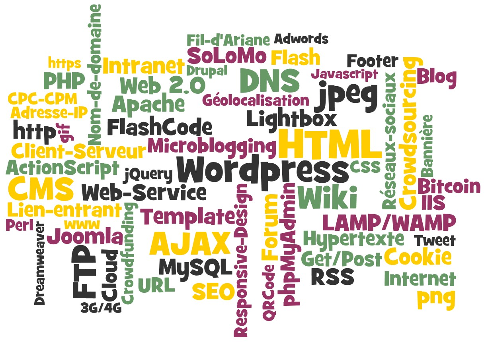
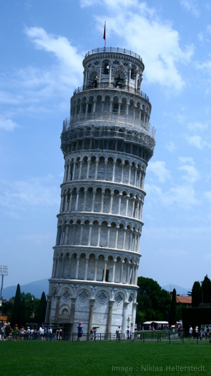

Web design et développement
Septembre 2019 par DWAM 2019.
Bienvenue aux cours de Web Design et Développement (web design, multimédia et programmation).
Conçu pour les élèves en Bachelor Infographiste/Webdesigner (BIW) et en Bac Pro Communications
(BACC), ce site web est à la fois notre principal outil de classe, car toutes les leçons et exercices
pratiques y sont répertoriés, et une base de référence où vous pouvez trouver toutes les informations
pertinentes aux cours et aux connaissances enseignées (matières, programmes, référentiels,
horaires, et cetera).
Le zoo des concepteurs du web
Septembre 2019 par DWAM 2019.
Pour maîtriser la création web, on doit s'attaquer à la maîtrise de son jargon. Il ne faut pas avoir
peur...

Il faut être capable de comprendre les termes les plus souvent employés dans le domaine du web. Il
faut pouvoir classer, dans la grande taxonomie du web, les concepts, les technologies, les standards
et les protocoles évoqués par ces termes. Il faut comprendre la place de chacun et les relations entre
eux. Il faut comprendre comment ces choses s’imbriquent pour être capable de concevoir et
construire les systèmes web.
Exercice de recherche :
Pour débuter le chemin vers cette compréhension, voici un exercice. Pour chacun des termes dans le
diagramme ci-dessus, essayer de le définir ou de le décrire. Pour le concept/technologie/etc évoqué,
essayer d'imaginer aussi son contexte, sa place, ses relations avec d'autres
concepts/technologies/etc. Comment cette chose s'imbrique-t-elle dans un système web ? Pour les
termes qu'on ne connaît pas ou qu'on connaît insuffisamment, faire des recherches sur internet pour
en apprendre plus. Version BACC1.
Web Design et La Tour de Pise
Septembre 2019 par DWAM 2019.
Un vrai professionnel du web design est aussi, au fond, un bon webmestre et un bon développeur
web. En effet, dans mes cours je vous casse les pieds avec des "détails" qu'on pourrait penser
s'appliquer plutôt au métier d'informaticien.
Des détails comme la configuration d'un système WAMP, les entités HTML, les principes du modèle
client-serveur ou compter en binaire et en héxadécimal. Ou bien comme la signification des mots et
acronymes jargonnesques comme IP, FTP, HTTP, DNS, URL, Get/Post, localhost, Apache, IIS et
AJAX.
Ces choses sont les outils de votre métier et il faut les connaître. Mais encore, tout simplement, c'est
pour éviter ceci...

La tour de Pise
La tour de Pise penche à un angle de seulement 4° mais
même à l’œil nu, la différence par rapport à la verticale
paraît énorme.
La tour est un exemple magnifique d'architecture de
l'Europe médiévale, qu'on s'occupe de son écart avec la
verticale ou pas. On peut alors dire que la vision de celui
qui l'a conçue a été remarquable.
Par contre, sa compréhension des fondamentaux de la
construction a dû être limitée pour avoir choisi un
emplacement composé d'argile, de sable et de
coquillages.
Les métiers s'organisent en couches
Dans le monde du travail, les métiers s'organisent en couches. Pour être efficace dans sa couche, il faut obtenir
et maintenir une compréhension des deux couches autour de soi : la couche supérieure et la couche inférieure par
rapport à sa position dans la chaîne de l'expertise.
Un architecte qui connaît bien les caractéristiques et contraintes des matériaux comme l'acier, le
béton et le bois va être plus efficace qu'un autre qui conçoit des immeubles en filaments d'aluminium
impossibles à réaliser par rapport aux lois de la physique. Un architecte qui ne connaît ni le foot ni le
comportement des foules, va-t-il être capable de concevoir un stade de qualité ? Un bon architecte
doit connaître donc un peu le métier de la construction (connaissance de la couche inférieure) et
avoir ce qu'on appelle une connaissance métier - c'est à dire comprendre le contexte dans lequel ses
créations vont devoir vivre et être utiles (connaissance de la couche supérieure).
Autre exemple : une entreprise a besoin de créer des systèmes informatiques pour des chercheurs
en mathématiques. Le sujet de la recherche est le décryptage donc on aura besoin de hardware
performant. Des mathématiciens, cette entreprise en a. Des spécialistes du hardware et systèmes
d'exploitation dans la configuration cible hyper-poussée, il y en a aussi. Il ne manque que des
programmeurs. Un recruteur en voit deux. Ils ont tous les deux de bonnes connaissances dans le
langage de programmation cible. Par contre, seulement un des deux connaît un peu les
mathématiques des nombres premiers géants. Il a déjà configuré et administré des systèmes
d'exploitation en production et il connaît la différence entre SATA et SCSI. Qui aura le job?
Web Design dans le sandwich
Pour le Web Designer (à l'état pur), la couche inférieure est composée de webmestres et
développeurs web - ceux qui connaissent les briques du web et comment les assembler et les faire
tourner pour construire des édifices solides. Le web designer doit aussi avoir des connaissances làdedans s'il veut éviter de construire des tours de Pise. Il faut savoir aussi que, en réalité, il est rare
que le Web Designer ne fait que du design. Il est souvent impliqué dans le développement et même
dans la mise en production et dans la maintenance quotidienne. D'ailleurs, les freelances de la
création web (dont certains d'entre vous veulent sûrement faire partie) sont obligés de tout maîtriser
de A à Z. Donc dans mes cours, on apprend du Web Design, oui. Mais je vous casse les pieds avec
le reste aussi.
Après, il ne reste que la connaissance métier à obtenir. Évidemment, je ne la présente pas dans mes
cours car il y a tant de possibilités. Mais elle est cruciale aussi. La tour de Pise est un clocher.
Imaginez si l'architecte ne connaissait pas la fonction d'un clocher et laissait ni escalier ni cordes pour
sonner les cloches.